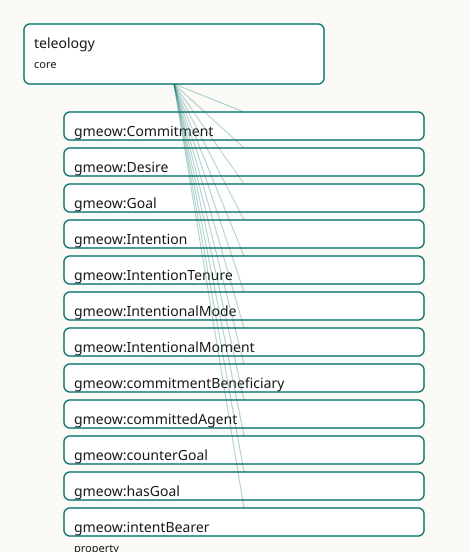

GMEOW Teleology Module
- IRI: https://blackcatinformatics.ca/gmeow/slices/teleology
- Tier: core
Group: core
What This Slice Covers
This slice owns 17 terms and contributes 0 mapping or projection rows. Use it when its terms match the native fact you want to preserve; use the linkage tables to see how those facts leave GMEOW for consumer vocabularies.
Dependencies
Consumers
- The agent-memory flagship (an agent recording its own goals across sessions — Principle 14) and the lbox principia importer (EPIC: 21-goal hierarchy with counter-goals and tier tenure). The norms extension ranges
prescribedConductoverGoal.
Local Map

Terms
Classes
| Term | Label | Definition |
|---|---|---|
gmeow:Commitment |
Commitment | A social commitment — an agent committed toward at least one other agent to bring about a goal (UFO-C: social moment). A relator, not a mode: it mediates the c... |
gmeow:Desire |
Desire | An intentional mode of wanting without commitment — the agent would welcome the goal's satisfaction but has not committed to pursuing it (UFO-C: desire). Inher... |
gmeow:Goal |
Goal | A described state of affairs that an agent may want, intend, or commit to bring about — the propositional content of the intentional modes, existing by social... |
gmeow:Intention |
Intention | An intentional mode of internal commitment — the agent has settled on pursuing the goal (UFO-C: intention), though no other agent holds them to it. Inheres in... |
gmeow:IntentionTenure |
Intention Tenure | The reified, time-scoped fact that an agent held an intentional mode over an interval — a goal adopted in January and abandoned in June is an opened-then-close... |
gmeow:IntentionalMode |
Intentional Mode | The abstract category of intrinsic intentional moments — desires and intentions — that inhere in exactly one agent and aim at a goal. The intrinsic branch of g... |
gmeow:IntentionalMoment |
Intentional Moment | The umbrella category of all goal-directed moments — UFO-C's intentional moment, spanning the intrinsic branch (gmeow:IntentionalMode: desires and intentions i... |
Properties
| Term | Label | Definition |
|---|---|---|
gmeow:commitmentBeneficiary |
commitment beneficiary | An agent toward whom the commitment is made. NOT functional: a commitment may be made toward several beneficiaries at once. Must be distinct from the committed... |
gmeow:committedAgent |
committed agent | The agent bound by a commitment — the one who has committed. Functional: one commitment, one committed agent; mutual promises are two Commitments, one in each... |
gmeow:counterGoal |
counter-goal | Constitutive opposition between goals — the named shadow that partly defines what the goal means (an oath and its betrayal; a bond and its dissolution). Symmet... |
gmeow:hasGoal |
has goal | Flat shortcut: the agent holds this goal, commitment grade unspecified. The 80% case (Principle 4); promote to a Desire / Intention / Commitment when the grade... |
gmeow:intentBearer |
intent bearer | The agent in whom a desire or intention inheres. Functional: an intrinsic mode has exactly one bearer (gUFO inherence, asserted with GMEOW's own property by Pr... |
gmeow:intentionGoal |
intention goal | The goal at which a desire, intention, or commitment aims — its propositional content. Functional: one mode, one goal; an agent pursuing five goals bears five... |
gmeow:motivates |
motivates | Relates a desire, intention, or commitment to an event the agent undertook (at least in part) because of it — the teleological reading of action. NOT functiona... |
gmeow:satisfiedBy |
satisfied by | Relates a goal to a situation that counts as achieving it. NOT functional: many situations may satisfy one goal, and disputed satisfaction is several coexistin... |
gmeow:tenureAgent |
tenure agent | The agent whose intentional mode an intention-tenure records. Functional: one tenure, one agent. |
gmeow:tenureIntention |
tenure intention | The desire or intention the tenure records the agent as holding over its interval. Functional: one tenure, one mode. Commitment tenure is carried by the Commit... |
Guide
teleology
Slice:
https://blackcatinformatics.ca/gmeow/slices/teleology· tier: core
Goals, desires, intentions, and commitments — the UFO-C intentional-moment trichotomy surfaced as GMEOW core (EPIC). Core by Principle 16 commitment: an agent recording its own goals across sessions is a question every AI system will face about itself, alongside identity and deception epistemics.
The commitment-graded trichotomy
| Grade | Class | Grounding | Bound to |
|---|---|---|---|
| wanted | gmeow:Desire |
gufo:IntrinsicMode |
one agent (intentBearer) |
| internally committed | gmeow:Intention |
gufo:IntrinsicMode |
one agent (intentBearer) |
| socially committed | gmeow:Commitment |
gufo:Relator |
committed agent + distinct beneficiaries |
All three sit under the named umbrella gmeow:IntentionalMoment (UFO-C's
intentional moment), which exists so intentionGoal and motivates carry a
generator-visible domain — anonymous union domains vanish from the LinkML /
GraphQL / TypeScript surface (review). All three aim at exactly one
gmeow:Goal (intentionGoal) — the
propositional content, a SocialObject describing a state of affairs,
satisfied by situations (satisfiedBy, vantage-indexed satisfaction). DOLCE
DnS arrives at the same description-satisfied-by-situations shape
independently; IAO's objective specification is the BFO-world counterpart.
Both are alignment targets (linkage-grade, never imported axioms), deferred
with the rest of the alignment set to keep this landing pure-ontology — the
target list is fixed in: PROV Plan/hadPlan, P-Plan, FIBO FND-GAO,
IAO, SUMO desires/intends, CCO Objective, CRM P20/P21,
ConceptNet/ATOMIC; Wikidata goal Q4503831 (verified 2026-06-11).
Doctrine highlights
counterGoalis constitutive, not lexical — the named shadow that partly defines the goal (an oath ↔ its betrayal). Symmetric, irreflexive (SHACL). Usecn:Antonym-grade opposition elsewhere.- No global satisfaction verdicts (Principle 9):
satisfiedBy,motivates, and goal-attribution all rideaccordingToon the statement. Avowed goals (agent's own vantage, top authority for its own standpoint) and attributed goals (observer vantage) coexist. - Flat-first (Principle 4):
hasGoalfor the 80% case →Desire/Intention/Commitment when grade matters →IntentionTenure(theStandpointTenureidiom) when adoption/revision over time is the fact of interest. Revision by suppression, never deletion (Principle 10). - Solver boundary (Principle 12): goal decomposition, planning, and means–end reasoning are never triples.
- Deontic force lives in the norms extension , which ranges
prescribedConductoverGoal— dependency points extension → core only.